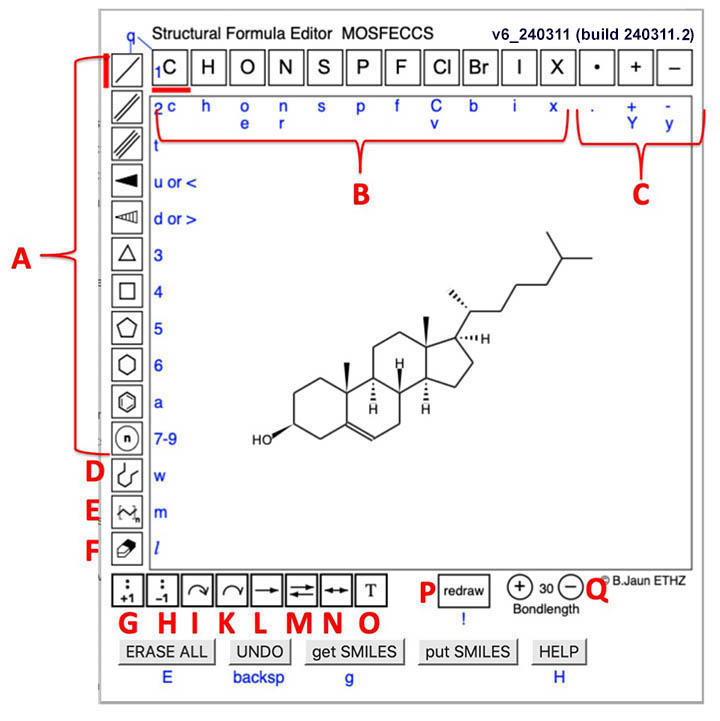

Structural Formula Editor Help
This Quick-Guide applies to MOSFECCS version v6 240305
If you are using a tablet or smart phone you find specific help here
On devices with windows (desktop/laptop) the drawing area of the editor adjusts to the window size.

Keyboard shortcuts for changing tools: see blue characters next to tools.
The keybord shortcut "k" will display these shortcuts in the editor, pressing "k" again will make them disappear.
Icon tools
A. Bond and ring tools
B. Element tools: H,C,N,O,S,P,F,Cl,Br,I
X for all other elements of the periodic table, isotopic lables, residues R,R1,R2,R3,R4 or carbene (enter C:) or nitrene (enter N:) centers via a small text input window.
C. Radical (• toggle on/off) and charge (+: increase/ - : decrease) tools
D. General chain tool:
Chain of carbon atoms with 120° bond angle and 180° or 0° dihedral at any bond in the chain.E. Straight chain tool:
Chain of n carbon atoms zig-zag with 120° bond angle, 180° dihedral.F. Eraser tool: delete atom or bond
G. Lone pair tool: increase number of lone pairs by 1
H. Lone pair tool: decrease number of lone pairs by 1
I. Full arrow tool: draw electron pair shift arrow with full head
K. Half arrow tool: draw single electron shift arrow with half head
L. Reaction arrow, irreversible: define educts and products and draw reaction arrow
M. Reaction arrow, equilibrium: define left- and right-side molecules and draw equilibrium arrow
N. Resonance structures arrow: define the resonance structure on each side and draw doubleheaded arrow
O. Reaction arrrow annotation: text above and below a reaction arrow (reversible or irreversible)
All tools are “sticky”, i.e. they remain set as long as they aren't changed by the user (exceptions: the erase, ring and chain tools set the element symbol to carbon; selecting an element different from C with the ring or chain tools active, changes them to single bond)
P. Redraw (or !): triggers a redraw of the whole editor canvas (with the current molecules centered). The element is reset to C and the tool to single bond. Try this first if the Editor is unresponsive or appers to "hang".
Q. Bondlength : change bondlength (20 ≤ bondlength ≤ 50; default: 30). Tantamount to scaling down/up everything drawn. Increasing bondlength is prevented when an atom would fall outside the drawing area.
Buttons
UNDO (or backspace ): go back one step (repeatable until empty canvas is reached; Redo is not implemented)
ERASE ALL (or E ): delete all drawn structures, re-initialize to empty canvas.
Get SMILES (or g): shows the SMILES code for copy/paste.
Put SMILES: converts an entered SMILES back into a structural formula
HELP (or H ) shows this HTML page.
Terms used in this manual:
Drawing or Dragging: moving the mouse while pressing the left mouse button
Click: pressing and releasing the left mouse button at the same location
Touched atom or bond: atoms or bonds highlighted by a red circle when the mouse is within the critical distance.
Drawing structural formulae
All drawing is done by clicking or drawing with the left mouse button
Whenever drawing is going on (moving the mouse while the left mouse button remains pressed) the bond and chain tools will show the prospective new bonds and atoms in magenta. The atoms and bonds are definitively added when the mouse button is released. Whenever the mouse is closely appraoching an existing atom or bond, the “touched” atom or bond is highlighted with a red circle.
• Select the appropriate tool in the left icon bar by clicking the icon.
• Select the element symbol (top icon bar). X will prompt for the symbol of less common elements in a small text input window. Carbene- or Nitrene centers are entered via X by entering C: or N: but will be shown as C and N in dark green serife letters. Isotopic labels are entered as the atomic mass (integer), followed by the element symbol (13C, 7Li etc.) in the X-tool. Instead of 2H and 3H, D and T are also accepted. The editor will show H-isotopes as H,D or T. Other isotopic labels are shown as a left superscript in red.
Only valid element symbols, C:, N:, D, T or R, R1, R2, R3, R4 for monovalent residues are allowed.• Place the first atom by clicking into the empty canvas or by drawing the first bond directly.
• Bonds and a new atom are created by drawing from any existing atom in the desired direction. They are drawn with the standard bond length in the direction of the mouse pointer (with an angle-snap of 15°). If a bond is drawn from an existing atom to another existing atom (which highlights when the mouse touches it), length and direction of the new bond are not restricted.
Ring tools:
Saturated rings (3,4,5,6-membered, or 7,8,9-membered via the n-ring icon) are drawn by first selecting a ring tool and then:
• Clicking into the empty canvas (if there are no atoms yet).
• Clicking an existing atom: the clicked atom will become a member of the ring.
• Fused rings: drawing from the center of a bond in the direction in which the ring should be added. The bond will become part of the ring.
• Clicking an atom (exception: sp2-centers) of an existing ring will generate a spiro connection to the new ring at this atom.
Chain tools:
(chain tools automatically set the element to carbon, all bonds single)
The general chain tool draws any chain of carbon atoms with 120° bond angles and 0° or 180° dihedral angles at each bond. This is a versatile tool that can also draw rings or fused rings.
Use the general chain tool to draw rings with more than 9 atoms.
The straight chain tool draws a saturated chain of carbon atoms with 120° bond angles and 180° dihedrals (zig-zag). The number of atoms increases with the distance of the mouse from the starting atom. The “sense” of the zig-zag alternates every 15°, the snap for the final chain direction is 30°. The chain is created definitively when the mouse is released.
Chains start where the mouse-draw is started (left mouse button down) either at an existing atom or, if the canvas is blank or the alt key is pressed, at the mouse position.
Drawing two or more structures or single, non covalently bound atoms such as counter ions:
Pressing the alt key while clicking or drawing in an empty canvas area will create the first atom, bond or ring of a new structure that is not bonded to the already existing structure(s). Deleting a non terminal atom or a bond that is not part of a ring in an existing structure will also create two separate structures.
Drawing Lewis-Structures:
Clicking an atom with the +1 lone-pair tool selected increases the number of visible lone pairs on this atom (max. 4); clicking an atom with the -1 lone pair tool selected decreases the number of visible lone pairs on this atom (min. 0). No check is made against the valency and atom type. It is entirely up to the user to decide how many lone pairs (0-4) should be visible on an atom.
Mechanisms: drawing "intended" electron pair (or single electron) shifts with curved arrows.
With either the full-arrow tool or the half-arrow tool selected, a curved arrow can be drawn. Arrows have to start and end at either atoms or bonds. Draw from the start atom/bond to the end atom/bond. The curvature of your move will determine the clockwise/counterclockwise curvature of the arrow. To change the curvature of the arrow, click onto the small circle in the middle of the curve.
Reaction schemes: drawing reaction arrows
Draw the structures of the molecules involved in a reaction first, then select the reaction arrow tool (irreversible, or reversible). First select the molecules on the reactant side (a rectangle labeled "reactants" or "left side"(equilibrium) will appear). Then select the molecules on the product side–a rectangle labeled "products" or "right side" (equilibrium) will appear–and the arrow will be drawn. Whenever you move molecules involved in a reaction, the reaction arrow will be redrawn accordingly.
When the mouse is moved towards the center of a reaction arrow, it is highlighted by grey circle (similar to bonds and atoms) and rectangles indicating reactant and product molecules appear.
If the eraser tool is active, a click in the highlighting circle will delete the reaction arrow.
Any action that changes the numer of molecules on the reactant or product side will delete the associated reaction arrow (e.g. deleting an acyclic bond or atom or a whole molecule).
Annotating reaction arrows:
If the text annotation tool (T) is active, a text input dialog with two fields ("above:" and "below:" will appear, into which the desired annotations (above and below) can be entered. If the arrow already has an annotation, it can be changed or erased (empty fields) in the same way.
Resonance structures: drawing double headed arrows
Draw the resonance structures first, then select the double headed arrow tool. First select the resonance structure on the left side (a rectangle labeled "left side" will appear). Then select the resonance structure on the right side (a rectangle labeled "right side" will appear) and the arrow will be drawn.
Resonance structure arrows can not be annotated.
SMILES extensions for lone-pairs, curved arrows and reaction arrows:
If drawn, lone-pairs, electron-shifting arrows or reaction arrows (including optional annotations) will be encoded in special sections of the SMILES code and can be checked for correctness by e-learning environments such as Moodle. Entering a SMILES code with appended lone-pair, curved arrows or reaction arrows sections into the SMILES parser (SMILES -> Structural Formula button) will also reconstruct the lone pairs, curved arrows and reaction arrows.
Making a copy of a drawn structure
Select one or more structure(s) and drag a selection rectangle while pressing the alt key. Alternatively: Pressing the alt key while dragging an atom or bond of an existing structure will create a copy of this structure at the place where the mouse is released (no previous selection required).
This is useful to quickly generate several stereoisomers or resonance structures (Grenzstrukturen) of a molecule.
Beware: no “collision control” or automatic “fusion” of atoms is done when the copy is moved too close to or on top of another structure!
No curved arrows and no reaction arrows will be copied from the original structure to the copy.
Editing a structure
• Selecting a new element symbol and clicking an atom will change the element of this atom.
• Selecting a bond tool (single, double or triple, stereo-up, stereo-down) and clicking the center of an existing bond of different bond order will change the bond order.
• With the stereo-up or stereo-down bond tool selected, a click on a bond of the same type will flip the direction of the wedge.
• With the radical tool selected, clicking an atom toggles between radical or non-radical center.
• The charge tools increase (+) or decrease (-) the formal charge on the clicked atom.
• To draw a carbene or nitrene center select the X-element and enter "C:" or "N:" respectively.
Curved arrows are highlighted by a small red dot if the mouse pointer passes over the middle of the curve. If the erase tool is selected, a click on the red dot deletes the arrow. If any other tool is selected, the click on the red dot will change the curvature (clockwise or counterclockwise) of the arrow.
Changing the element of an atom or deleting an atom will delete all arrows connected to this atom.
Changing the bond type or deleting a bond will delete all arrows connected to this bond.
Moving atoms and bonds
Dragging an atom with the shift key pressed will move this atom relative to the rest of the molecule. If the moving atom comes close to an existing atom (indicated by a red circle around the “touched” atom), the two atoms will be “fused” upon release of the mouse button, i.e. the moving atom's ligands get bonded to the “touched” atom and the moving atom is deleted.
Dragging a bond with the shift key pressed moves both atoms of the bond in parellel. When, upon release of the mouse button, one of the two moving atoms “touches” an existing atom, the atoms are “fused”. When the moving bond “touches” a parallel existing bond, the two bonds and their atoms are “fused”.
Clicking an acyclic single bond whith the shift key pressed will flip the smaller of the two branches connected by this bond around the clicked bond by 180° in 3D. The configuration of stereogenic centers in the flipped branch is conserved (by changing up/down stereobonds if necessary).
Selecting a structure
One or several structures can be selected by drawing a spanning rectangle around the structure(s) or part of them (the rectangle must at least contain one of their atoms). Alternatively, several stuctures can be selected sequentially by drawing spanning rectangles around each molecule.
If atoms of different molecules are inside the spanned rectangle, all molecules containing one of these atoms will be selected. When only one molecule is selected, the selection rectangle with the in-plane- and 180°-3D-rotation handles appears. For more than one selected molecule, simple bounding rectangles appear around each selected molecule and only the move, copy and delete actions are available.
Selection always selects the whole structure/molecule (all atoms connected to each other by bonds) even if the spanned rectangle only includes a part of a structure. Selected structures are visualized by a bounding rectangle in magenta.
Selected structures can be:
• deleted with the backspace key
• moved by dragging the selection rectangle to a new position
• copied by dragging the selection rectangle with the alt key pressed
For single selected molecules:
• rotated in plane by dragging the rotation handle (the rotation angle is indicated in degrees)
• rotated 180° in 3D around the vertical or horizontal axis by clicking the corresponding 180° handle
Beware: if the eraser tool is active, making a selection immediately deletes the selected structure(s)!
Deleting atoms and bonds
With the eraser tool active, a click on an atom or bond will delete this atom or bond.
If one or more structures are selected, pressing the backspace key will delete them.
If the eraser tool is active, selecting one or more structures will immediately delete them.
Curved electron-shift arrows or reaction/resonance structure arrows can be deleted with the eraser tool in the same way as atoms or bonds.
Moving structure(s)
When the shift key is pressed, dragging in empty space moves all existing structures in the direction of the mouse drag (no selection necessary)..
Moving one structure relative to all others
Structures can be selected and then moved by dragging a selection rectangle with the mouse (without alt+shift keys).
Alternatively: an individual structure can be moved relative to all others by dragging an atom or or bond while pressing both the alt+shift keys.
Beware: No automatic “fusion” of atoms or bonds is done when one structure is moved too close to or on top of another structure! However, atoms coming too close to each other during the move are highlighted by a red square.
Restricted aerea:
Along the border of the canvas, there is an area where drawing is not possible. This prevents creation of atoms outside the drawing space with some of the tools. When moving structures, the move is limited in all directions such that no element of the existing structure ends within the restricted area. Selecting a structure does not work if the selection rectangle would reach into the restricted area. In this case, move all structures with the shift key away from the restricting border and select again.
Rotating a structure
A single selected structure can be rotated in 2D by dragging the rotation handle (the rotation angle is indicated during the rotation).
A single selected structure can be rotated by 180° in 3D around the vertical or horizontal axis by clicking in the 180° handle (thus preserving the configuration at stereogenic centers).
Buttons below the canvas
The ERASE ALL button erases all structures and resets MOSFECCS to its initial state
The UNDO button reverts to the state before the last action that changed the structure, including the setting of the tools. UNDO can be repeated to go back step by step until the empty canvas appears again. The backspace key has the same effect as the UNDO button.
The get SMILES button generates the SMILES string of the current structure and displays it in a small window. Initially, the whole SMILES string is selected and can be copied to the clipboard with the "copy" command of your Browser/OS (ctrl-c for Windows, cmd-c for MacOS) .
Stereogenic centers: Only atoms with at least one wedge bond (up/down stereo bonds) are considered as potential stereogenic centers. If the drawing around a stereogenic center (wedges) is ambiguous or inconsitent, no SMILES string is presented. Instead, a warning is issued and the structure is shown with the ambiguously or inconsistently drawn centers highlighted by a red square. The next click or drawing operation removes the red squares.
Advice on how to draw stereogenic centers correctly with MOSFECCS is given here.
The put SMILES button opens a text-input dialog for entering a SMILES code (e.g. via copy/paste from the clipboard). When submitted via the REPLACE button, the current structural formulae are replaced with the one corresponding to the entered SMILES code. If submitted via the ADD button, the structure corresponding to the entered SMILES is added as a non-connected additional structural formula to the already existing ones.
After conversion of the entered SMILES into a structural formula, MOSFECCS checks the validity of the conversion by re-generating the SMILES code from the structure. If the entered and recalculated SMILES codes are not identical (ERASE MODE) or the entered SMILES code is not contained in the recalculated SMILES (ADD MODE) the structure is nevertheless shown but a corresponding message is written to the console of the browser.
For some complex molecules with several fused rings, the parser may not be able to draw the stereo up/down bonds in a way that is accepted by the SMILES generator. In his case, an alert message appears and the atoms with conflicting or non-unique stereo drawing will be shown with red squares (same as if the user had drawn a stereogenic center inappropriately).
The HELP button displays this help file.